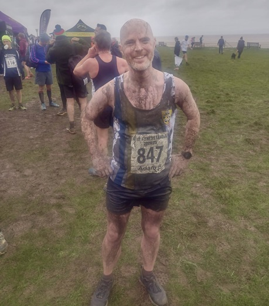

A team of 22 runners from Sevenoaks Athletics Club braved the elements to run in the 4th race of the KFL series, in Minnis Bay, Birchington on Sunday January 5th, writes Jim Knight.
It was wet, windy and cold, but despite the bad weather 451 runners from across Kent took part in the race. Following the recent heavy rain, the course was even wetter than normal, making it a gruelling 6-mile race with waist deep water in some of the dykes.
The SAC team was missing several star runners, but still performed really well, with the women’s team coming 2nd and the men 5th. The combined team came 3rd.
Joanna Rodda led the SAC women’s team home in 3rd place (and 1st W45), closely followed by Nicola Glover in 4th. The other scoring members of the SAC women’s team were Heather Fitzmaurice (33rd), Vanessa Gilmartin (36th) and Rosie Williams (44th). This was an outstanding performance as only 6 Sevenoaks AC women made it to the race, and the team needed 5 to score. In contrast, the winning women’s team, Canterbury Harriers, fielded a team of 15.

In the men’s race, Sevenoaks’ fastest runner was Guilaume Nineven (9th) closely followed by Ed Saunders in 10th place. The other scoring members were Paul Fanti (36th), Andrew Hutchinson (52nd), Keith Dowson (62nd and 1st M60), Seb Naughton (73rd), Andrew Monk (84th), and David Kilpack (87th).
Once again, Sevenoaks’ Jeremy Winter was the fastest M70.
A special mention for Adam Bates (pictured) who lost a shoe in one of the dykes, spent 5 minutes in waist-deep water to find it…….and still finished in 286th position.
After 4 races, the SAC women are still leading the series just ahead of Canterbury Harriers …..by just one point. The men’s team are lying 3rd and the combined team 2nd, just one point behind the leaders, Petts Wood Runners.
The SAC positions and times were:
| Ov Pos | Lg Pos | Bib | Runner | Age | Time | Club | Score | Rtg | # |
|---|---|---|---|---|---|---|---|---|---|
| 9 | 9 | 891 | Guillaume Nineven | 39 | 38:54 | Sevenoaks AC | M1 | 97.35 | 19 |
| 10 | 10 | 899 | Edmund Saunders | 42 | 39:13 | Sevenoaks AC | V40:1 | 97.02 | 30 |
| 36 | 36 | 860 | Paul Fanti | 51 | 41:43 | Sevenoaks AC | V50:1 | 88.41 | 6 |
| 53 | 52 | 874 | Andrew Hutchinson | 45 | 43:07 | Sevenoaks AC | V40:2 | 83.11 | 26 |
| 63 | 62 | 857 | Keith Dowson | 61 | 43:43 | Sevenoaks AC | V60 | 79.80 | 21 |
| 75 | 3 | 896 | Joanne Rodda | 48 | 44:52 | Sevenoaks AC | V45 | 98.66 | 9 |
| 76 | 73 | 890 | Sebastian Naughton | 50 | 44:53 | Sevenoaks AC | V50:2 | 76.16 | 20 |
| 79 | 4 | 864 | Nicola Glover | 37 | 45:03 | Sevenoaks AC | V35 | 97.99 | 19 |
| 91 | 84 | 886 | Andrew Monk | 48 | 45:41 | Sevenoaks AC | M2 | 72.52 | 14 |
| 94 | 87 | 875 | David Killpack | 39 | 46:03 | Sevenoaks AC | M3 | 71.52 | 14 |
| 95 | 88 | 907 | Daniel Witt | 49 | 46:07 | Sevenoaks AC | NS | 71.19 | 76 |
| 145 | 128 | 844 | Brian Allen | 53 | 48:55 | Sevenoaks AC | NS | 57.95 | 10 |
| 177 | 149 | 884 | Jonathan Marsh | 65 | 50:10 | Sevenoaks AC | NS | 50.99 | 13 |
| 184 | 153 | 846 | James Baker | 60 | 50:53 | Sevenoaks AC | NS | 49.67 | 33 |
| 193 | 33 | 862 | Heather Fitzmaurice | 55 | 51:32 | Sevenoaks AC | V55 | 78.52 | 82 |
| 198 | 164 | 878 | Leonard Lai King | 45 | 51:45 | Sevenoaks AC | NS | 46.03 | 19 |
| 204 | 169 | 906 | Jeremy Winter | 71 | 52:13 | Sevenoaks AC | NS | 44.37 | 13 |
| 212 | 36 | 863 | Vanessa Gilmartin | 49 | 52:49 | Sevenoaks AC | F1 | 76.51 | 37 |
| 235 | 192 | 882 | Alan Male | 55 | 54:05 | Sevenoaks AC | NS | 36.75 | 11 |
| 243 | 44 | 905 | Rosie Williams | 56 | 54:18 | Sevenoaks AC | F2 | 71.14 | 2 |
| 286 | 225 | 847 | Adam Bates | 41 | 56:43 | Sevenoaks AC | NS | 25.83 | 10 |
| 341 | 84 | 900 | Sarah Shewell | 65 | 1:00:41 | Sevenoaks AC | NS | 44.30 | 131 |
The full results are here.
The next race is in Betteshanger Park, Deal on January 12th.
The Kent Fitness League is a series of cross-country races between the 18 registered Athletics Clubs in Kent. Any number of club members can compete, but 12 are needed to score in the team competition – 8 men (of whom one must be aged 60+, two must be 50+ and two 40+) and 5 women (of whom one must be aged 55+, one 45+ and one 35+).